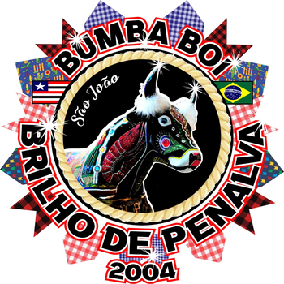

James Cunha/27/06/2023
A manifestação de cunho popular que mais me fascina e encanta, indubitavelmente é a festa de São João.E nem mesmo o contagiante carnaval com a sua luxúria na passarela, não compatibilizo com o riquíssimo trabalho bordado no lombo de um boi ,como imagem de Santo, estrela, flor,em formas diversificadas,constituindo-se em uma autentica obra de arte e beleza; isso, porém, sem deixar a par, os cantadores expressando as suas toadas ao som das matracas trabalhadas no repente de suas inspirações; os tambores rústicos cobertos com pele de cobras ; os cazumbas e suas caretas estrambóticas; os vaqueiros e seus gingados engraçados na roda do boi.Ademais, o folguedo em seu universo representativo.
Tenho saudades da minha Penalva, de quando eu me levantava pelas madrugadas mui empolgado, para ver um boi brincando em meio a explosão de bombas, cheiro de tangerina e muita cachaça jatobá. Lembro-me das noites enluaradas e quanto romantismo, naquelas noitadas, vendo uma quadrilha passando na minha rua, animadas por foguetes e cantorias queixosas a São João, dada ausência de um amor que naquelas alturas não aparecerá." Meu São João eu não eu não tenho alegria, só porque não vem, só porque não vem que eu tanto queria ". Era mágico um balão enorme subindo como promessa de algum devoto.E, tantas fogueiras nas ruas, tradicionalmente no dia do Santo festejado, em uma festa por excelência religiosa.E, assim, a noite passara depressa.Pela manhã, sol lindo, céu azul, lua pálida no firmamento, o boi partira para outro local , ficando alguns participantes dormindo pelas calçadas, ora de sono, ora mesmo de embriaguez.No areial frio e umedecido pelo orvalho, cintilavam cantinhos e missangas que, eu juntava- as para bordar o lombo do meu boizinho imaginário.
Aí, então, era o fim do São João, sem mais tabuleiros contendo laranjas e doces, sem banca de caipira, senão resquícios pelo chão e na minha memória.No arvoredo da minha casa os bem-te-vis em delírio cantavam, enquanto a minha mãe varria o quintal e eu idealizava as minhas ilusões em uma manhã impregnadas de essencias e dos sonhos pueris.Lindas manhãs da minha vida já se foram, deixando muita saudade.
A festa do Bumba Meu Boi do Maranhão, é muito amada pelo povo e muito envolvente.E, mesmo com sotaques diferentes, não perde a sua identidade de ser a maior festa popular do estado: Matraca, Zabumba,Orquestra, Baixada e Costa-de-Mão. O sotaque da baixada , trás singularidades estéticas nas vestimentas e nos instrumentos utilizados por seus brincantes.Matracas , tambores,etc. As vestes são padronizadas, com delicada costura-cheias de brilho e notável singeleza- ,somam-se aos chapéus de penas cujo tamanho reflete a imponência de um legado histórico. Contudo, o nosso sotaque tem suas peculiaridades: a forma dos timbres sonoros é heterogênea, devido ao trato com os instrumento, por vezes fabricados artesanalmente com pele de animais e aquecidos ao redor de fogueiras, uma espécie de afinação, até chegar na sonoridade almejada. Contudo, O bumba boi do Maranhão, é uma festa que,durante o mês de junho, muda a vida dos maranhenses, encanta turistas, fazendo jus ao ser reconhecido como -Patrimônio Cultural Imaterial da Humanidade.Viva São João! James Cunha